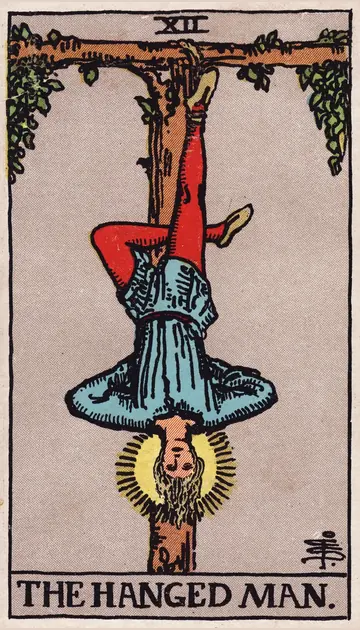

正位置吊るされた男の正位置
キーワード：忍耐・視点を変える・待つ
恋愛
今は動くより、待つことで道が開ける時です。
相手の気持ち動きたくても動けない状況にいるようです。
この先待った分だけ、関係が深まりそうです。
アドバイス相手の視点から、二人の関係を見直してみましょう。
気をつけること我慢しすぎて、自分を犠牲にしないように。
この先待った分だけ、関係が深まりそうです。
アドバイス相手の視点から、二人の関係を見直してみましょう。
気をつけること我慢しすぎて、自分を犠牲にしないように。
人間関係
相手の立場に立つことで、見えてくるものがある時です。
相手の気持ちあなたとの関係を、慎重に見守っているようです。
この先見方を変えることで、関係が良くなりそうです。
アドバイス自分から一歩引いて、相手を立ててみましょう。
気をつけること相手に合わせすぎて、疲れないように。
この先見方を変えることで、関係が良くなりそうです。
アドバイス自分から一歩引いて、相手を立ててみましょう。
気をつけること相手に合わせすぎて、疲れないように。
仕事・学業
思うように進まなくても、学びの多い時期です。
この先今の経験が、あとで大きな糧になりそうです。
アドバイス行き詰まったら、やり方を逆から考えてみましょう。
気をつけること待つだけで、何もしない状態にならないように。
アドバイス行き詰まったら、やり方を逆から考えてみましょう。
気をつけること待つだけで、何もしない状態にならないように。
お金
お金は、少し様子を見るのが良い時です。
この先待ったことで、良い判断ができそうです。
アドバイス大きな買い物は、少し待ってみましょう。
気をつけること焦って取り戻そうとしないように。
アドバイス大きな買い物は、少し待ってみましょう。
気をつけること焦って取り戻そうとしないように。
生活
生活のペースを落として、見直す時です。
この先立ち止まった分、新しい気づきがありそうです。
アドバイスいつもと違う過ごし方を試してみましょう。
気をつけること我慢しすぎないように。
アドバイスいつもと違う過ごし方を試してみましょう。
気をつけること我慢しすぎないように。
今日の運勢
無理に動かず、流れに身を任せるのが良い日です。
この先思わぬ気づきがありそうです。
アドバイスいつもと違う視点で、物事を眺めてみましょう。
気をつけること考えすぎて、身動きがとれなくならないように。
アドバイスいつもと違う視点で、物事を眺めてみましょう。
気をつけること考えすぎて、身動きがとれなくならないように。
逆位置吊るされた男の逆位置
キーワード：報われない我慢・停滞・執着
恋愛
我慢が報われず、疲れを感じやすい時です。
相手の気持ちあなたとの関係で、身動きがとれないと感じているようです。
この先状況を変える一歩を踏み出せば、流れが変わりそうです。
アドバイス我慢をやめて、自分の気持ちを伝えてみましょう。
気をつけること報われない関係に、執着しすぎないように。
この先状況を変える一歩を踏み出せば、流れが変わりそうです。
アドバイス我慢をやめて、自分の気持ちを伝えてみましょう。
気をつけること報われない関係に、執着しすぎないように。
人間関係
一方的に合わせてばかりになりやすい時です。
相手の気持ちあなたに合わせることに、少し疲れているようです。
この先自分を大切にすれば、関係のバランスも整いそうです。
アドバイス無理に合わせるのをやめ、自分のペースを取り戻しましょう。
気をつけること自分を犠牲にするのが、当たり前にならないように。
この先自分を大切にすれば、関係のバランスも整いそうです。
アドバイス無理に合わせるのをやめ、自分のペースを取り戻しましょう。
気をつけること自分を犠牲にするのが、当たり前にならないように。
仕事・学業
努力が空回りし、停滞しやすい時期です。
この先動き出せば、停滞から抜け出せそうです。
アドバイス状況を変えるために、小さく動き出しましょう。
気をつけること同じやり方を続けても、状況は変わりにくいです。
アドバイス状況を変えるために、小さく動き出しましょう。
気をつけること同じやり方を続けても、状況は変わりにくいです。
お金
お金の我慢が、限界に来やすい時です。
この先やり方を変えれば、楽になりそうです。
アドバイス無理な節約をやめて、続けられる形にしましょう。
気をつけること我慢の反動で、使いすぎないように。
アドバイス無理な節約をやめて、続けられる形にしましょう。
気をつけること我慢の反動で、使いすぎないように。
生活
同じ毎日に、息苦しさを感じやすい時です。
この先動き出せば、気分が変わりそうです。
アドバイス小さな変化を、自分から起こしてみましょう。
気をつけることずるずると先延ばしにしないように。
アドバイス小さな変化を、自分から起こしてみましょう。
気をつけることずるずると先延ばしにしないように。
今日の運勢
身動きがとれないように感じる日です。
この先小さな行動が、気分を変えてくれそうです。
アドバイス気分転換に、いつもと違うことをしてみましょう。
気をつけることずるずると先延ばしにしないように。
アドバイス気分転換に、いつもと違うことをしてみましょう。
気をつけることずるずると先延ばしにしないように。
このページの文章は、アプリ「ひとやすみタロット」の結果に使っている文章です。アプリでは、あなたの相談や、カードが出た位置（今の状況・これからの流れ・アドバイス）に合わせて、この中から文章を選びます。逆位置の読み方は逆位置のことをご覧ください。
「吊るされた男」が出たら、あなたの相談ではどう読む？
アプリでは、質問への答えに合わせて、カードの言葉をあなたの相談に合わせて届けます。
Android 対応・会員登録なし